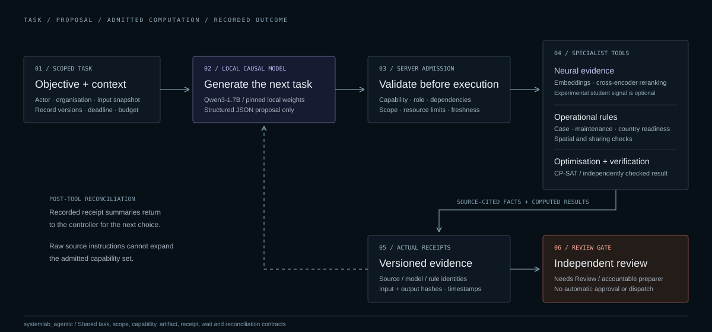
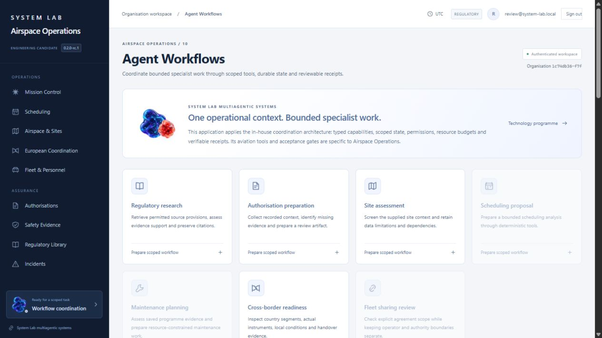
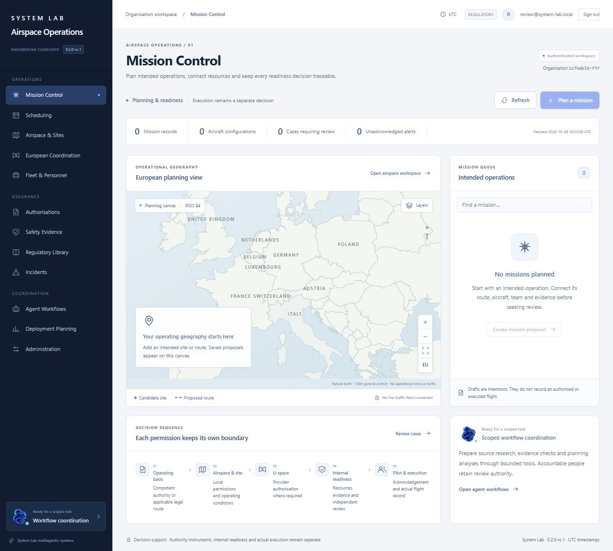

Recorded causal experiment
Its duration belongs to the first local execution. It is not substituted for the later UI workflow's timings.
Original first-run record ↗Software verification / 0.2.0-rc.1
Inspect actual local controller proposals, specialist receipts and cited source passages. This viewer reads bundled records. It does not run a model, accept uploads, connect to an operator instance or manage aircraft.
Loading bundled evidence…
Two source-grounded research queries
The four preserved runs use developer-authored research queries. This is a tiny source-section proxy, not representative operator testing or legal-answer validation.
| Recorded order / controller | Final gate | Target section found | Citations | Generative calls | Observed elapsed |
|---|
Run order and cache reuse confound these elapsed times. They establish no speed benefit. Target-section matching does not establish legal correctness or model superiority.
Its duration belongs to the first local execution. It is not substituted for the later UI workflow's timings.
Original first-run record ↗
The newly authored systemlab_agentic package supplies reusable task, scope, capability, receipt, wait and reconciliation contracts. Airspace and a document-research adapter consume it.
The application integrates five byte-identical owner-authorised 2.5D WebGL presentation resources. Its adapter supports reduced motion, pause and static-image fallback. This UI technology is separate from neural inference and permissions; this viewer does not execute the reserved renderer.
Rights and presentation boundary ↗Actual authenticated UI and durable worker
Recorded step
This is the stored action proposal and receipt metadata, not hidden chain-of-thought.
Independent review remains required. The stored gate does not grant approval, external submission or flight execution.

Actual UI workflow evidence
The operation/source date in the preserved request is 27 October 2026. These are dated reference texts; the record does not establish current or future applicability.
EASA reference consolidations are not asserted authentic OJ texts. Local extraction blocks resolve against the preserved source checksum/eRules section; they are not invented upstream website fragments.
Unchanged historical student artifact
The optional student detects literal shall-language. It is not the Qwen controller, semantic legal-obligation inference, operational prediction or a permission service.
No new weights, training or expert ground truth are claimed. Accepted labels are conditioned on exact-word validation, so the deterministic baseline is perfect by construction. Negative labels do not mean that a provision contains no legal obligation.
| Method | Agreement with filtered machine labels | Samples | Brier score |
|---|
These measures are not legal confidence or operational reliability. The student did not outperform its deterministic baseline and is not promoted.
Source passages, machine labels and student outputs are reproduced from the original run. They are not new observations or expert judgements.
Actual software interface
These views show the application and its empty operational states or recorded research work. They do not represent fabricated flights or an operational customer instance.

Raw reports and checksums are bundled with this viewer. Newly authored viewer code, regulatory source text, models and owner artwork retain separate rights.